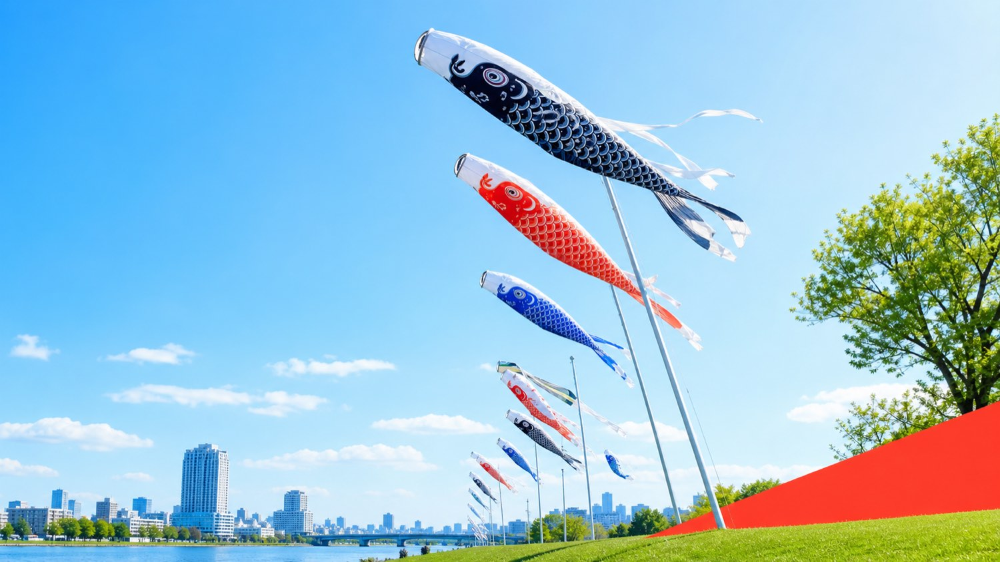
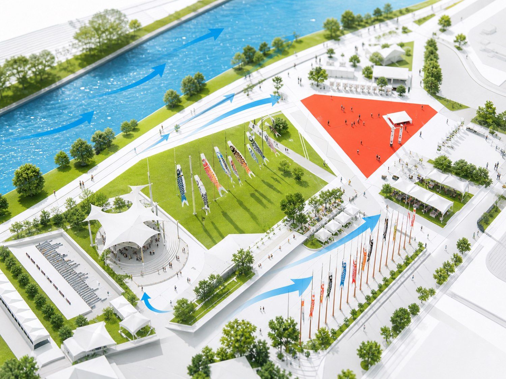
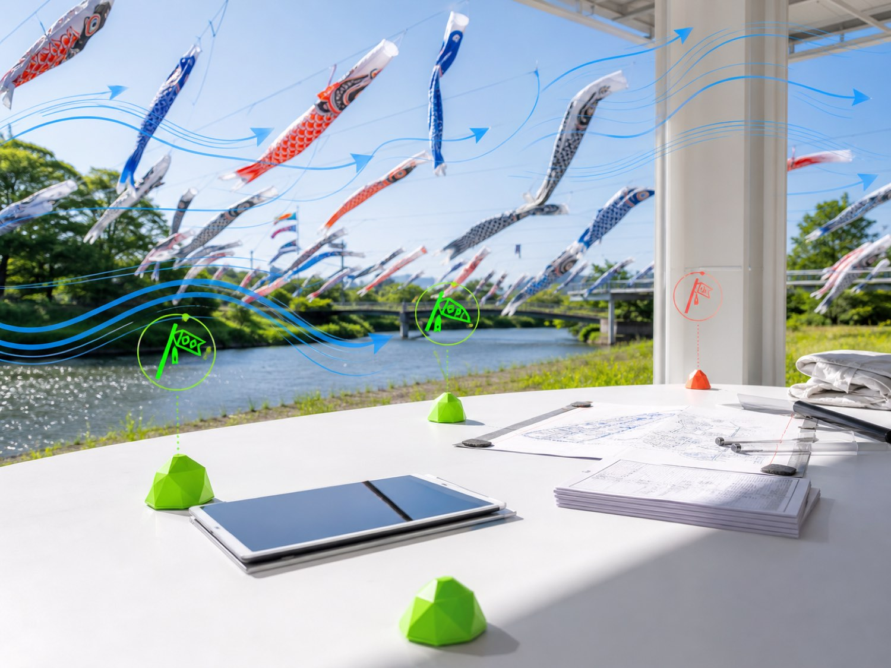

Wind-aware lift windows
Schedule pole teams around gust forecasts, river exposure, and streamer load so crews move once with confidence.

Aonagi Field gives civic teams a clear command layer for koinobori installations, volunteer crews, safety windows, vendor gates, and the public moments that make Children's Day feel effortless.
Replace scattered spreadsheets with one airy operations field. Aonagi Field watches wind windows, installation readiness, crowd paths, and public notices without turning the day into a control-room wall.
Schedule pole teams around gust forecasts, river exposure, and streamer load so crews move once with confidence.
See anchors, lines, streamer inventory, volunteer coverage, and inspection notes in one living site layer.
Turn internal signals into calm public notices for gate changes, viewing routes, photo zones, and delayed launches.

Aonagi Field is built for the real cadence of a festival day: inspect, lift, watch, adjust, publish, and close without losing the feel of the celebration.
Crews check anchors, rope tension, ground mats, and nearby access paths with a phone-ready checklist.
Exposed river bends, schoolyard courtyards, and roofline turbulence stay visible as live operating zones.
Food stalls, first aid, photo queues, and viewing routes receive the same schedule changes as field crews.
Approved updates publish in plain language so families know where to go and what changed.

Keep the wonder public. Keep the work precise.For parks departments, cultural offices, schools, sponsors, and production teams sharing one festival sky.
Build a clear Kodomo no Hi operating layer for every pole, path, crew, notice, and public moment.